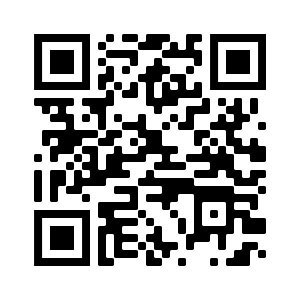

Fa uns dies, la SCS va descobrir un restaurant als EUA que semblava ser bo.
Volíem anar-hi com més aviat millor, però no coneixíem el preu de la gasolina que posaven en aquell poble,
i no volíem jugar-nos a què ens cobressin un ull de la cara en cas que ens quedéssim amb el dipòsit buit.
Avui toca una prova d'investigació geogràfica, Vinyet, que esperem que ens solucioni l'angoixa del desconeixement del preu
de la gasolina al poble del restaurant.
La missió d'avui és senzilla: escanejant aquest codi QR, podràs descarregar-te una aplicació, on hauràs de trobar
el restaurant publicat. És la mateixa aplicació que vàrem fer servir nosaltres. Un cop trobis el restaurant, esbrina
a quin poble es troba. Toca, simplement, trobar el preu de la gasolina que fan pagar a l'única gasolinera del poble.
Però clar, per a veure a quin preu es troba la benzina, t'hauries de desplaçar fins al poble, i donar un cop d'ull al
cartell que hi ha davant de la benzinera amb els preus. Si aconsegueixes desplaçar-t'hi, observaràs que la gasolinera
disposa de 3 tipus diferents de benzina. A nosaltres ens interessa la que es mostra a dalt de tot del cartell, aquesta
és la que fem servir... Però clar, això si aconsegueixes arribar a aquest poble dels Estats Units i trobar la benzinera
en menys de 24 hores i amb el confinament municipal... Em pregunto si hi ha alguna tecnologia que ens permeti visitar altres llocs
com si estiguéssim a peu de carrer, però sense sortir de casa...
